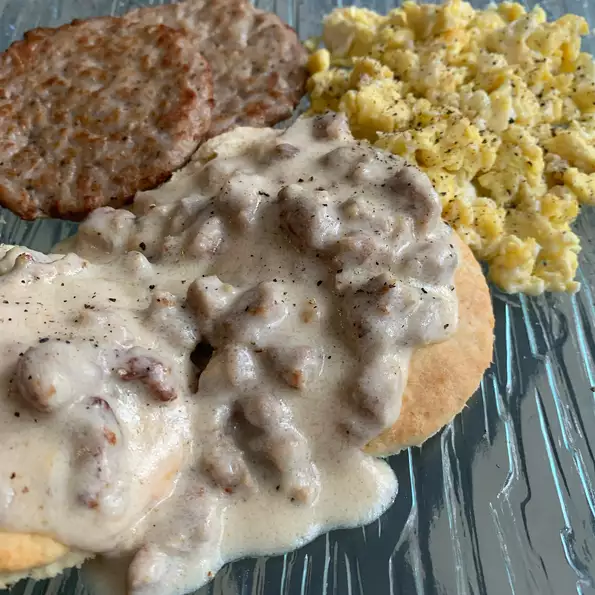

Sausage Biscuits and Gravy

Biscuits & Gravy
Hot jumbo buttermilk biscuits with creamy sausage
gravy are ready in just 15 minutes for a hearty,
family-favorite breakfast.
- 1 (19oz) can Southern-style flaky refrigerated biscuits (such as Pillsbury Grands®)
- 1 (16 ounce) package maple-flavored breakfast sausage
- 3 tablespoons all-purpose flour, or as needed
- 1 (12 ounce) can evaporated milk
- 1 1/2 cups milk
- 1/2 teaspoon salt
- 1/4 teaspoon ground black pepper
- 1 teaspoon butter
Directions
- Preheat oven to 350 degrees F (175 degrees C)
- Arrange biscuits about 1 1/2 inches apart on a baking sheet
- Bake in the preheated oven until golden brown, 13 to 17 minutes. Slice cooked biscuits in half crosswise and keep warm
- While biscuits are baking, crumble sausage into a large skillet over medium heat; cook, breaking meat apart, until no longer pink inside, about 10 minutes. Sprinkle sausage and pan drippings with flour and cook and stir until sausage is coated, about 1 more minute. Reduce heat to medium-low
- Pour evaporated milk into sausage mixture, followed by milk; stir until thoroughly combined. Bring to a simmer, stirring constantly, and cook until gravy is your desired thickness, 3 to 5 minutes. Season with salt and ground black pepper. Stir butter into gravy until melted. Stir in more flour if gravy isn't thick enough.
- Place biscuits with cut sides up on serving plates; top with sausage gravy